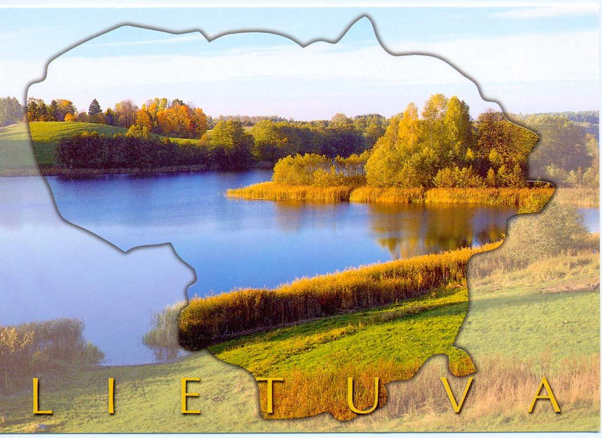

Lietuvos vardas rašytiniuose šaltiniuose pirmą kartą paminėtas 1009 m. – Lietuva (lotyniška kilmininko forma Lituae, tad vardininkas turėjo būti Litua). XI a. žinios apie Lietuvą pasirodo ir Rusios metraščiuose. Juose Lietuva minima ir kaip Kijevo duoklininkė, tačiau istorikai abejoja ar duoklė mokėta reguliariai, ar tai tik rodo Kijevo Rusios pretenzijas į lietuvių žemes. Nuo XII a. lietuviai šaltiniuose jau minimi kaip rengiantys žygius į kaimynines šalis.Pirmuoju valdovu, suvienijusiu Lietuvą ir sukūrusiu Lietuvos valstybę laikomas didysis kunigaikštis Mindaugas. 1251 m., siekdamas sustiprinti savo valdžią ir nutraukti konfliktą su Livonija, Mindaugas apsikrikštijo ir karūnavosi 1253 m. liepos 6 d. Karūnacijos vieta nežinoma, šaltiniuose minima tik, kad buvo karūnuotas Lietuvoje, pagal tai kai kurie istorikai nusprendė, kad pastovios sostinės Mindaugas neturėjo. Vėliau, apie 1260 m., Mindaugas sugrįžo prie savo protėvių tikėjimo. Lietuva su Mindaugu 1258 m. patyrė sunkų išbandymą – valstybė buvo siaubta Burundajaus vadovautų mongolų-totorių žiemos žygio metu. 1263 m. Mindaugą nužudė sūnėnas Treniota. Mindaugas buvo pirmasis ir vienintelis krikščioniškasis karalius Lietuvos istorijoje, nes po jo mirties Lietuva grįžo į pagonybę ir katalikiškasis karaliaus titulas buvo prarastas.